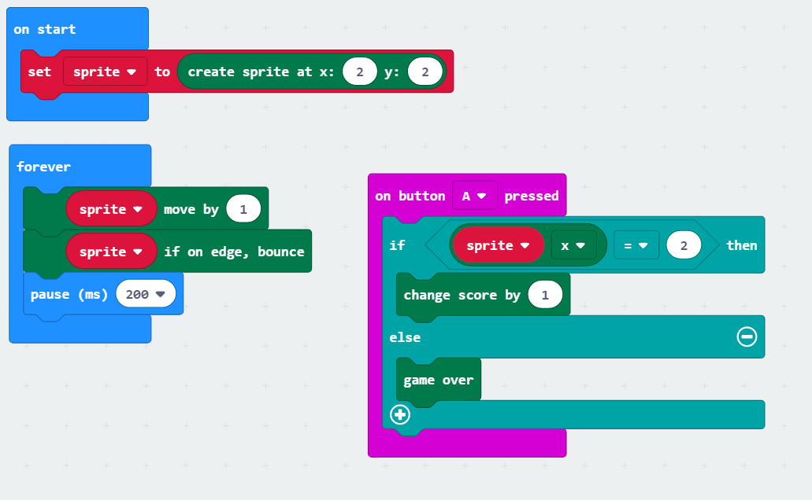
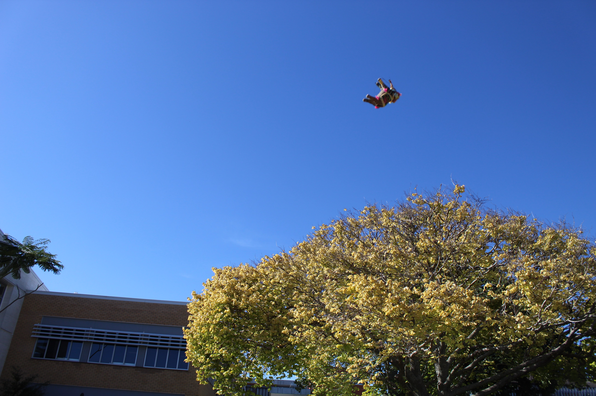
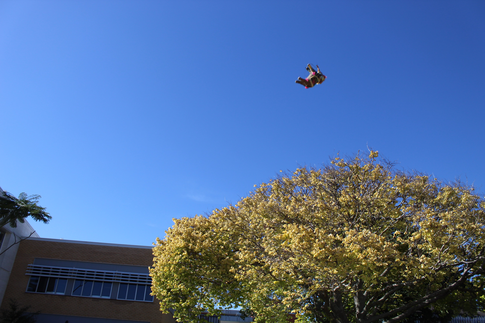

Microbit

We programmed the microbits to do many different things.
Photos

 

We were given DSLR cameras to take some pictures. We experimented by adjusting the apperture, the f stop and the shutter speed. Click the button to see all the photos.
Click Here